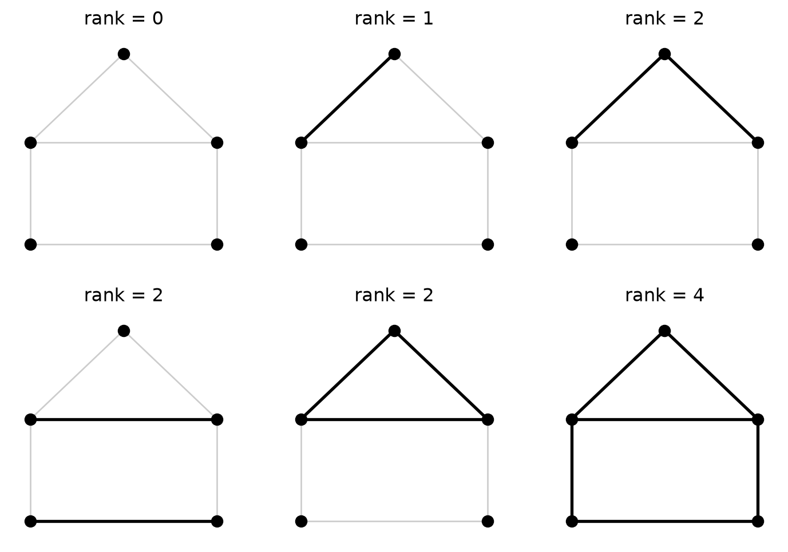
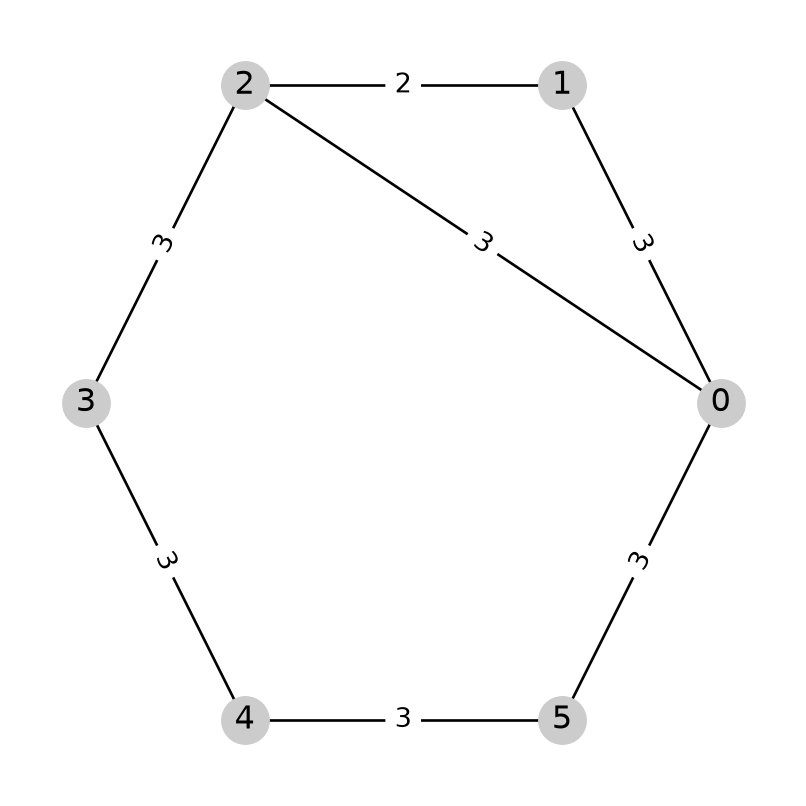
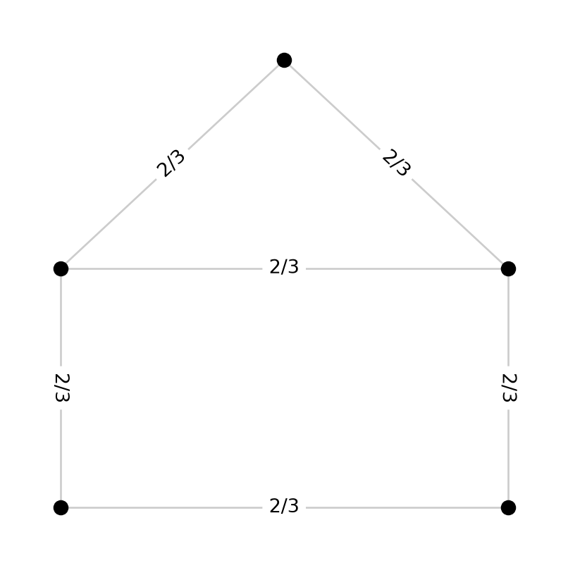
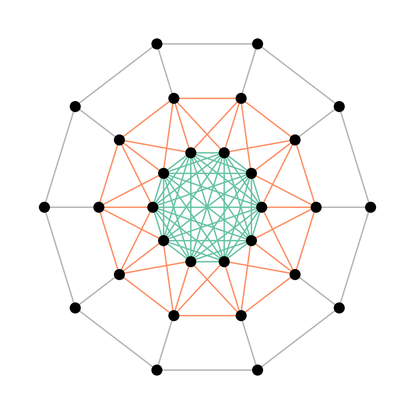

import matplotlib.pyplot as plt
import networkx as nx
import numpy as np
from fractions import Fraction
from discrete_modulus import demo
from discrete_modulus.spanning_tree_modulus import (
rank,
create_flow_graph,
cunningham_min,
graph_vulnerability,
spanning_tree_modulus,
)5 Exact Spanning Tree Modulus
plt.rcParams['figure.figsize'] = (4, 4)5.1 Introduction
The Dual Families chapter showed that the spanning tree family \(\Gamma\) (with the usual \((0,1)\) usage matrix) has a beautifully characterized blocking dual \(\hat{\Gamma}\): Chopra’s feasible partitions (Chopra 1989), whose usage weights are \(1/(k-1)\) for a partition into \(k\) components. That chapter only computed the corresponding modulus by enumerating a polyhedron with pycddlib, which is only practical for tiny graphs.
This chapter gives an exact, combinatorial algorithm (see Albin et al. (2025)) that computes this same quantity directly, without ever enumerating \(\hat{\Gamma}\), and that scales to much larger graphs. The algorithm builds on Cunningham’s algorithm for polymatroids (Cunningham 1985), which works on a generic matroid but is particularly easy to understand when specialized to the language of spanning trees, as we do below. It’s implemented in discrete_modulus.spanning_tree_modulus, with an independent C++ implementation in cpp/ (see its API reference for discrete_modulus::spanning_tree_modulus and friends).
5.2 Rank
Consider an undirected graph \(G=(V,E)\) with vertex set \(V\) and edge set \(E\). The rank function on \(G\) is a function \(f:2^E\to\mathbb{N}_0\). Given a subset of edges \(J\subseteq E\), the rank of \(J\) is defined as
\[ f(J) = |V| - Q(G_J), \]
where \(G_J=(V,J)\) is the subgraph of \(G\) created by removing the edges not in \(J\) and \(Q\) is the function that counts the number of connected components (including isolated vertices) of a graph.
Another way to think about rank is as follows. Let \(J'\subseteq J\) be an acyclic set of edges (i.e., a forest). The rank of \(J\) is equal to the size, \(|J'|\), of the largest such subset. Although this function is never used internally by spanning_tree_modulus, rank is included in the library since it may help build intuition.
# example graph
G, pos = demo.house_graph()
# edge sets to compute the rank of
examples = [
[],
[(0, 1)],
[(0, 1), (1, 2)],
[(0, 2), (3, 4)],
[(0, 1), (1, 2), (2, 0)],
list(G.edges),
]
# draw examples with rank computed
plt.figure(figsize=(9, 6))
for i, J in enumerate(examples):
plt.subplot(2, 3, i + 1)
nx.draw(G, pos, node_size=50, node_color="black", edge_color="#ccc")
nx.draw_networkx_edges(G, pos, edgelist=J, edge_color="black", width=2)
plt.title("rank = {}".format(rank(G, J)))
5.3 Polymatroid
From the rank function, \(f\) (which is an example of what Cunningham calls a polymatroid function), we define the polymatroid \(P(f)\) as
\[ P(f) = \{x\in\mathbb{R}^E_{\ge 0} : x(J)\le f(J)\text{ for all }J\subseteq E\}. \]
To unpack this definition, we start with \(x\in\mathbb{R}^E_{\ge 0}\). This defines \(x\) as a non-negative vector indexed by the edge set \(E\). Such a vector can be thought of as a function from \(E\) to the non-negative real numbers \(\mathbb{R}_{\ge 0}\). So \(x\) is just a way of assigning a value \(x(e)\ge 0\) to each edge \(e\in E\). Given a subset of edges \(J\subseteq E\), we define \(x(J)\) to be the sum of \(x\) over all \(e\in J\). In other words,
\[ x(J) = \sum_{e\in J}x(e). \]
The polymatroid \(P(f)\) is defined to be the non-negative vectors, \(x\), with the property that \(x(J)\le f(J)\) for every subset of edges \(J\subseteq E\).
As an example, consider the polymatroid for the cycle graph \(C_3\) on three vertices. This graph has three edges, which we can label \(e_1\), \(e_2\) and \(e_3\). A vector \(x\in\mathbb{R}^E_{\ge 0}\) assigns a non-negative value to each of these edges. Now, let’s consider the requirements for \(x\) to belong to the polymatroid \(P(f)\). The empty set \(J=\emptyset\) doesn’t place any conditions on \(x\). Next, there are three singleton subsets of the form \(\{e_i\}\) for \(i=1,2,3\). Each of these sets has rank \(1\), so we get three constraints on \(x\):
\[ x(e_i)\le 1\quad\text{for }i=1,2,3. \]
There are also three subsets containing exactly two edges. Each of these subsets has rank 2, so we get three additional conditions on \(x\):
\[ x(e_1) + x(e_2) \le 2,\quad x(e_1)+x(e_3) \le 2,\quad\text{and}\quad x(e_2)+x(e_3)\le 2. \]
Finally, there is a single subset of \(E\) that contains all three edges, namely \(J=E\). This set has rank 2 and therefore gives one final condition on \(x\):
\[ x(e_1) + x(e_2) + x(e_3) \le 2. \]
The set \(P(f)\) in this case is exactly the set of non-negative vectors \(x\in\mathbb{R}^E_{\ge 0}\) that satisfy all 7 of the above inequalities. (Of course, the second set of three inequalities is implied by the first set of three, so there are in reality only four important inequalities.)
5.4 Polymatroid bases
Let \(y\in\mathbb{R}^E_{\ge 0}\). We say that \(x\in\mathbb{R}^E_{\ge 0}\) is a \(P(f)\)-basis of \(y\) if the following conditions hold.
- \(x\in P(f)\),
- \(x\preceq y\) (elementwise comparison), and
- \(x\) is maximal in the sense that it cannot be increased on any edge without violating one of the two previous properties.
5.5 Cunningham’s algorithm
A key ingredient in this method of finding spanning tree modulus is computing lots of \(P(f)\)-bases for various \(y\). To do this, we use Cunningham’s algorithm.
Cunningham’s algorithm is a greedy algorithm. Essentially, we initialize \(x=0\) on all edges. Then, we loop over every edge \(j\in E\) and increase \(x\) on \(j\) until either we run into an inequality in the polymatroid \(P(f)\) or we reach \(y(j)\). Cunningham proved that this greedy procedure of looping through all edges once and making \(x\) on each as large as possible without violating any of the inequality constraints (\(x\in P(f)\) and \(x\preceq y\)) results in \(x\) being a \(P(f)\)-basis of \(y\). At the end of this procedure, there will be some set of edges \(J\subseteq E\) that is tight in the sense that \(x(J)=f(J)\). This tight set is also used in the computation of modulus.
5.6 The max-flow problem
At each step of the algorithm, we will either set \(x(j)=y(j)\) or we will discover that we can’t make \(x(j)\) that large without violating one of the inequalities \(x(J)\le f(J)\) for all \(J\subseteq E\). Checking these inequalities is the hard part. The number of subsets to check is \(2^{|E|}\), which makes a brute force approach computationally expensive. Fortunately, Cunningham formulated an equivalent max-flow problem that can identify a critical subset \(J\). Without getting into the details of why it works, there is a relatively simple procedure for producing a capacitated flow network to solve the problem. Using a max-flow solver then produces the answer to the question “How big can I make \(x(j)\) without leaving the polymatroid \(P(f)\)?”
5.7 Integer arithmetic
The implementation in discrete_modulus.spanning_tree_modulus is not quite the one Cunningham described. We want to compute everything in exact arithmetic (not floating point arithmetic), so we need to perform a little transformation. In the spanning tree modulus code, we always look for a \(P(f)\)-basis of a rational constant vector \(y\equiv\frac{p}{q}\). This can be transformed into looking for a \(P(qf)\)-basis of the constant vector \(y\equiv p\). This transformation produces a max-flow problem with integer capacities that can be solved exactly.
Here’s a small example of Cunningham’s algorithm in action.
# create and draw the graph
G = nx.cycle_graph(6)
G.add_edge(0, 2)
pos = nx.circular_layout(G)
nx.draw(G, pos, with_labels=True, node_color='#ccc')
# find a P(f) basis for the constant function 3/4
F = create_flow_graph(G)
x, J = cunningham_min(G, F, 3, 4)
nx.draw_networkx_edge_labels(
G, pos, edge_labels={(u, v): x[(u, v)] for u, v in G.edges}
)
print("P(qf) basis")
print(x)
print()
print("tight set")
print(J)P(qf) basis
(0,1): 3, (0,5): 3, (0,2): 3, (1,2): 2, (2,3): 3, (3,4): 3, (4,5): 3
tight set
{(0, 1), (0, 2), (1, 2)}
In order to interpret the results, remember that the code computes a \(P(qf)\)-basis. In this case, \(q=4\). To translate the result back to a \(P(f)\)-basis, we need to divide by \(q\). The code has found a \(P(f)\) basis for the constant function \(y\equiv \frac{3}{4}\) that assigns \(\frac{3}{4}\) to all edges except \(\{2,3\}\), to which it assigns \(\frac{2}{4}=\frac{1}{2}\).
To see why we can’t assign \(\frac{3}{4}\) to the last edge, look at the tight set returned. Evidently the triangle of edges \(J\) among the vertices \(0\), \(1\) and \(2\) is tight for this \(x\). To verify this, note that \(J\) has rank 2. Summing \(x\) on those three edges gives \(\frac{3}{4} + \frac{3}{4} + \frac{2}{4} = \frac{8}{4}=2\). Since \(x(J)=f(J)\), it’s not possible to increase \(x\) on any of those edges while keeping \(x\) inside the polymatroid.
5.8 Graph vulnerability
The way Cunningham’s algorithm is used in the modulus code is as a way of finding vulnerable sets of edges on the graph. Without getting into detailed definitions, we’ll just say that there is a value, \(\theta(G)\), that is called the vulnerability of \(G\). In the modulus code, we need to compute this vulnerability. There are two interesting facts about graph vulnerability that make Cunningham’s algorithm useful for this problem.
First, the value of \(\theta(G)\) can take one of only finitely many values. Specifically,
\[ \theta(G) \in \left\{\frac{p}{q} : 1\le p\le\min\{|V|-1,q\},\;1\le q\le |E|\right\}. \]
Second, given a rational number \(\frac{p}{q}\), Cunningham’s algorithm can be used to answer the question “Is \(\theta(G)\le\frac{p}{q}\)?” In a little more detail, it works like this. We take the rational number \(\frac{p}{q}\) and find a \(P(f)\)-basis, \(x\), of \(\frac{p}{q}\). It can be shown that \(\theta(G)\le\frac{p}{q}\) if and only if \(x(E)\ge|V|-1\). More precisely, in order to use integer arithmetic, we find a \(P(qf)\)-basis, \(x\), of the constant function \(p\), and check if \(x(E)\ge q(|V|-1)\). Here’s some code that shows that working.
# count the number of edges and vertices
m, n = len(G.edges), len(G.nodes)
# create the set of all possible theta values
Theta = sorted(
{Fraction(p, q) for q in range(1, m + 1) for p in range(1, min(n - 1, q) + 1)}
)
# loop to query about the size of theta
print(f"| {'p/q':^8} | {'x(E)':^6} | {'q(|V|-1)':^10} | {'theta(G) <= p/q':^15} |")
for theta in Theta:
p, q = theta.numerator, theta.denominator
x, J = cunningham_min(G, F, p, q)
xE = sum(x.values())
ok = xE >= q * (n - 1)
print(f"| {str(theta):^8} | {xE:^6} | {q * (n - 1):^10} | {str(ok):^15} |")| p/q | x(E) | q(|V|-1) | theta(G) <= p/q |
| 1/7 | 7 | 35 | False |
| 1/6 | 7 | 30 | False |
| 1/5 | 7 | 25 | False |
| 1/4 | 7 | 20 | False |
| 2/7 | 14 | 35 | False |
| 1/3 | 7 | 15 | False |
| 2/5 | 14 | 25 | False |
| 3/7 | 21 | 35 | False |
| 1/2 | 7 | 10 | False |
| 4/7 | 28 | 35 | False |
| 3/5 | 21 | 25 | False |
| 2/3 | 14 | 15 | False |
| 5/7 | 34 | 35 | False |
| 3/4 | 20 | 20 | True |
| 4/5 | 25 | 25 | True |
| 5/6 | 30 | 30 | True |
| 1 | 5 | 5 | True |This shows that the graph vulnerability in this case is \(\frac{3}{4}\).
5.8.1 Binary search
Since the possible \(\theta(G)\) values are ordered and since we can query about which side of a particular value \(\theta(G)\) falls, we can use a binary search to locate the value. This is exactly what graph_vulnerability does.
theta, J = graph_vulnerability(G, F)
print("theta(G) =", theta)
print()
print("tight set:")
print(J)theta(G) = 3/4
tight set:
{(0, 1), (0, 2), (1, 2)}5.9 Computing modulus
Computing the spanning tree modulus using Cunningham’s algorithm amounts to finding a certain value \(\eta^*(e)\) for every edge of the graph. The algorithm proceeds as follows. We begin with a graph \(G\) and perform a binary search to find \(\theta(G)\), along with a tight set \(J\). This tells us two things:
- \(\eta^*(e)=\theta(G)\) for every edge in the complement \(\overline{J}\), and
- If we remove \(\overline{J}\) from the graph, then the computation can be repeated on each connected component of the remaining edges.
In this way, we disassemble the graph by discovering \(\eta^*\) on subsets of the edges, removing those edges, and finding \(\eta^*\) on more edges. Since there are only finitely many edges in the graph, eventually this process terminates (when all edges have been removed), and we will know the value of \(\eta^*\) on every edge.
There is one small caveat. It is possible for Cunningham’s algorithm to return with the tight set equaling the entire set of edges. When this happens, there is a smaller set of edges that is tight, but \(E\) itself is always tight, and it’s not the one we want. If we get \(J=E\) back, then the complement \(\overline{J}=\emptyset\) is empty, so we don’t learn about the edges where \(\eta^*\) is equal to \(\theta(G)\).
The trick to getting around this is to rerun Cunningham’s algorithm with a slightly smaller value \(\frac{p'}{q'}<\frac{p}{q}\). As long as \(\frac{p'}{q'}\) is larger than the next smallest possible \(\theta\) value, the complement of the tight set returned (which now can’t be all of \(E\)) is the set where we should set \(\eta^*\). This rerun has to operate on the connected component currently being processed, not the original graph; by the time this fallback is needed, the graph may already have been split into several components, and only one of them is what the flow network was built for.
# create the graph
G, pos = demo.house_graph()
# compute eta^*
eta_star = spanning_tree_modulus(G)
# plot the graph
nx.draw(G, pos, node_color="black", node_size=50, edge_color="#ccc")
edge_labels = {(u, v): eta_star[(u, v)] for u, v in G.edges}
nx.draw_networkx_edge_labels(G, pos, edge_labels=edge_labels);
# create the graph
G, pos = demo.nested_graph(10)
# compute eta^*
eta_star = spanning_tree_modulus(G)
# plot the graph
nx.draw(
G, pos, node_color="black", node_size=50,
edge_color=[float(eta_star[e]) for e in G.edges], edge_cmap=plt.cm.Set2,
)
Note how this connects back to the Dual Families chapter: \(\eta^*\) computed above is exactly the optimal density for the blocking dual of the spanning tree family (Chopra’s feasible partitions). We have computed this \(\eta^*\) exactly, and without ever enumerating the feasible partition family.